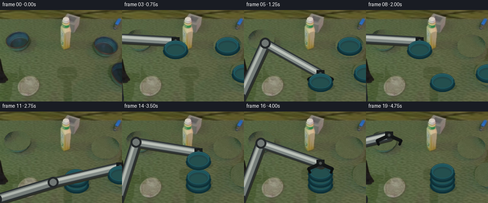
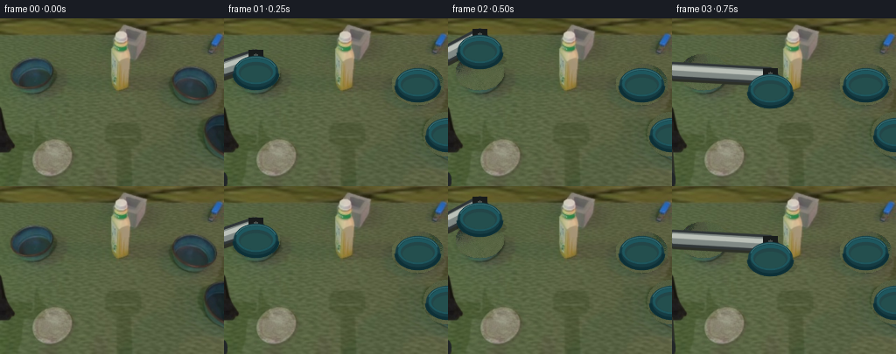

CODING AGENTS AS PIXEL WORLD MODELS
traex/GPT-5.6-Sol · common50_0046
点击播放 · 原生 RGB 像素
此结果可播放，但该运行尚未通过最终提交审核。页面展示不代表评测通过。
逐轮保存的候选
回放视频、检查图与代码变化。
每份候选均可单独播放。实际图片检查记录在下方工具轨迹中。
候选 01播放与检查图
点击播放 · 原生 RGB 像素


展开代码变化
--- 上一保存版本
+++ 本次保存版本
@@ -0,0 +1,148 @@
+from pathlib import Path
+import math
+import numpy as np
+import cv2
+from PIL import Image
+from artifact_io import save
+
+ROOT=Path(__file__).resolve().parent
+base=np.array(Image.open(ROOT/'first_frame.png').convert('RGB'))
+H,W=base.shape[:2]
+
+# Geometry in the source view: three medium teal bowls.
+bowls=[
+ dict(c=(36,61), axes=(24,17), pick=(36,61)),
+ dict(c=(221,75), axes=(26,20), pick=(221,75)),
+ dict(c=(256,132), axes=(25,22), pick=(252,132)),
+]
+
+# Build a clean background by replacing the source bowls with nearby texture.
+bg=base.copy()
+rng=np.random.default_rng(46)
+for b in bowls:
+ cx,cy=b['c']; ax,ay=b['axes']
+ yy,xx=np.ogrid[:H,:W]
+ mask=((xx-cx)/(ax+4))**2+((yy-cy)/(ay+4))**2 <= 1
+ ys,xs=np.where(mask)
+ # Local green table texture, sampled from a patch just below/left/right.
+ for y,x in zip(ys,xs):
+ sx=int(np.clip(x + (38 if cx<100 else -42) + rng.integers(-3,4),0,W-1))
+ sy=int(np.clip(y + 25 + rng.integers(-3,4),0,H-1))
+ if sy>187: sy=int(np.clip(y-32+rng.integers(-3,4),0,H-1))
+ bg[y,x]=base[sy,sx]
+# preserve the exact first frame separately; modest blur blends only filled regions
+blur=cv2.GaussianBlur(bg,(5,5),0)
+for b in bowls:
+ cx,cy=b['c']; ax,ay=b['axes']; yy,xx=np.ogrid[:H,:W]
+ m=(((xx-cx)/(ax+4))**2+((yy-cy)/(ay+4))**2 <= 1)
+ bg[m]=(0.65*bg[m]+0.35*blur[m]).astype(np.uint8)
+
+def ease(t):
+ t=max(0,min(1,t)); return t*t*(3-2*t)
+def lerp(a,b,t): return a+(b-a)*ease(t)
+def path(points,t):
+ n=len(points)-1; q=max(0,min(n-1e-8,t*n)); i=int(q); u=q-i
+ return tuple(lerp(points[i][k],points[i+1][k],u) for k in range(2))
+
+def add_poly(im, pts, color):
+ cv2.fillConvexPoly(im,np.int32(pts),color,lineType=cv2.LINE_AA)
+def line(im,a,b,color,width):
+ cv2.line(im,tuple(map(int,a)),tuple(map(int,b)),color,width,cv2.LINE_AA)
+
+def draw_bowl(im,c,scale=1.0,stack_level=0):
+ """Rigid enamel bowl, viewed obliquely. Same shape/color for all three."""
+ cx,cy=c; ax=int(25*scale); ay=int(18*scale)
+ # cast/contact shadow (stronger for bottom bowl)
+ sh=np.zeros((H,W),np.uint8)
+ cv2.ellipse(sh,(int(cx+2),int(cy+10)),(ax+3,max(4,int(ay*.48))),0,0,360,115,-1,cv2.LINE_AA)
+ shade=np.dstack([sh]*3)/255.0
+ im[:]=(im*(1-.30*shade)).astype(np.uint8)
+ # side wall extends beneath rim
+ cv2.ellipse(im,(int(cx),int(cy+6)),(ax,int(ay*.72)),0,0,180,(20,66,69),-1,cv2.LINE_AA)
+ cv2.ellipse(im,(int(cx),int(cy)),(ax,ay),0,0,360,(22,60,67),-1,cv2.LINE_AA)
+ cv2.ellipse(im,(int(cx),int(cy-1)),(ax-3,ay-4),0,0,360,(30,87,94),-1,cv2.LINE_AA)
+ cv2.ellipse(im,(int(cx),int(cy)),(ax-6,ay-7),0,0,360,(35,70,72),-1,cv2.LINE_AA)
+ # interior gradient and rim glints
+ cv2.ellipse(im,(int(cx),int(cy+2)),(ax-8,max(3,ay-9)),0,0,360,(36,79,78),-1,cv2.LINE_AA)
+ cv2.ellipse(im,(int(cx),int(cy-2)),(ax-2,ay-3),0,195,345,(53,112,119),1,cv2.LINE_AA)
+ cv2.ellipse(im,(int(cx),int(cy+1)),(ax,ay),0,5,175,(13,48,55),2,cv2.LINE_AA)
+
+def ik(wrist):
+ # fixed shoulder below left edge, stable 2-link arm. Clamp reach to maintain rigidity.
+ sx,sy=(-9.,184.); l1,l2=126.,132.
+ wx,wy=wrist; dx,dy=wx-sx,wy-sy; d=math.hypot(dx,dy)
+ d2=min(max(d,abs(l1-l2)+.1),l1+l2-.1)
+ a=(l1*l1-l2*l2+d2*d2)/(2*d2); h=math.sqrt(max(0,l1*l1-a*a))
+ ux,uy=dx/d,dy/d
+ # elbow above the shoulder-to-wrist line
+ ex=sx+a*ux-(-uy)*h; ey=sy+a*uy-(ux)*h
+ return (sx,sy),(ex,ey),(wx,wy)
+
+def draw_arm(im,wrist,closed=True):
+ s,e,w=ik(wrist)
+ # arm shadow
+ line(im,(s[0]+3,s[1]+4),(e[0]+3,e[1]+4),(45,48,39),18)
+ line(im,(e[0]+3,e[1]+4),(w[0]+3,w[1]+4),(45,48,39),15)
+ # rigid industrial links
+ line(im,s,e,(42,48,50),20); line(im,s,e,(116,124,120),13); line(im,(s[0]-2,s[1]-2),(e[0]-2,e[1]-2),(174,181,173),3)
+ line(im,e,w,(48,54,56),17); line(im,e,w,(128,137,133),11); line(im,(e[0]-2,e[1]-2),(w[0]-2,w[1]-2),(187,193,185),3)
+ for p,r in [(s,12),(e,11),(w,8)]:
+ cv2.circle(im,tuple(map(int,p)),r,(34,38,40),-1,cv2.LINE_AA); cv2.circle(im,tuple(map(int,p)),max(3,r-4),(112,119,116),-1,cv2.LINE_AA)
+ # black gripper housing and symmetric fingers, oriented vertically around bowl rim
+ wx,wy=map(int,w)
+ cv2.rectangle(im,(wx-8,wy-8),(wx+8,wy+5),(24,27,27),-1)
+ gap=17 if closed else 25
+ line(im,(wx-7,wy+3),(wx-gap,wy+11),(18,21,21),5); line(im,(wx+7,wy+3),(wx+gap,wy+11),(18,21,21),5)
+ line(im,(wx-gap,wy+11),(wx-gap+3,wy+19),(12,15,15),4); line(im,(wx+gap,wy+11),(wx+gap-3,wy+19),(12,15,15),4)
+ cv2.circle(im,(wx,wy-1),3,(74,80,77),-1)
+
+# Four beats: place bowl 1, place bowl 2, place bowl 3, retreat.
+# Destination stack sits on clear green surface near lower center, avoiding bottle.
+dest=(160,151)
+frames=[]
+for f in range(20):
+ if f==0:
+ frames.append(base.copy()); continue
+ im=bg.copy()
+ # subtle consistent table illumination; no camera motion
+ im=np.clip(im.astype(np.int16)+int(1.5*math.sin(f*.35)),0,255).astype(np.uint8)
+
+ # Determine completed stack and current manipulation.
+ if f<=5: phase=0; u=(f-1)/4
+ elif f<=10: phase=1; u=(f-6)/4
+ elif f<=15: phase=2; u=(f-11)/4
+ else: phase=3; u=(f-16)/3
+
+ # Bowl centers: level spacing keeps three bowls directly above one another.
+ levels=[dest,(dest[0],dest[1]-12),(dest[0],dest[1]-24)]
+ moving=None; wrist=None; gripping=True
+ if phase<3:
+ src=bowls[phase]['pick']; dst=levels[phase]
+ # pick is already secure at phase start; lift, carry in an arc, lower and release.
+ p=path([src,(src[0],src[1]-24),(112,82),(dst[0],dst[1]-25),dst],u)
+ moving=(p,phase)
+ wrist=(p[0],p[1]-17)
+ gripping=u<.88
+ else:
+ # all three stable; open gripper rises and retreats to left.
+ wrist=path([(dest[0],dest[1]-42),(112,82),(48,50)],u)
+ gripping=False
+
+ # Draw completed bowls bottom-to-top.
+ completed=phase if phase<3 else 3
+ for j in range(completed): draw_bowl(im,levels[j],1.0,j)
+ # Inactive source bowls stay where they began until picked.
+ for j,b in enumerate(bowls):
+ if j>phase and phase<3: draw_bowl(im,b['c'])
+ # During a move draw the arm behind the carried rigid bowl, then bowl, then gripper tips read clearly.
+ draw_arm(im,wrist,gripping)
+ if moving is not None: draw_bowl(im,moving[0])
+
+ # tiny contact cue on completed stack at release frames
+ if phase<3 and u>.88:
+ cv2.ellipse(im,(int(dest[0]),int(levels[phase][1]+10)),(22,4),0,0,180,(18,52,52),1,cv2.LINE_AA)
+ frames.append(im)
+
+arr=np.stack(frames).astype(np.uint8)
+assert np.array_equal(arr[0],base)
+save(arr,ROOT)
可观测工具轨迹
实际执行的命令与返回图片。
命令 1exit 0
/bin/bash -lc "cat prompt.txt && printf '\\n---RULES---\\n' && cat GENERATION_RULES.md"
命令 2exit 0
/bin/bash -lc "find . -maxdepth 2 -type f -printf '%p %s bytes\\n' | sort && printf '\\nTOOLS\\n' && command -v ffmpeg || true && command -v python3 || true"
命令 3exit 0
/bin/bash -lc "cat task_spec.json && sed -n '1,240p' artifact_io.py"
命令 4exit 0
/bin/bash -lc "python3 - <<'PY'
from PIL import Image
im=Image.open('first_frame.png')
print(im.mode, im.size)
PY"命令 5exit 0
/bin/bash -lc "python3 - <<'PY'
try:
import cv2; print('cv2',cv2.__version__)
except Exception as e: print(e)
PY"命令 6exit 0
/bin/bash -lc "python3 - <<'PY' import math S=(3,166); l1=120;l2=145 for W in [(36,40),(125,115),(222,50),(250,110)]: dx=W[0]-S[0];dy=W[1]-S[1];d=math.hypot(dx,dy) a=(l1*l1-l2*l2+d*d)/(2*d);h=math.sqrt(max(0,l1*l1-a*a)); ux=dx/d;uy=dy/d; px=-uy;py=ux print(W,d,'plus',(S[0]+a*ux+h*px,S[1]+a*uy+h*py),'minus',(S[0]+a*ux-h*px,S[1]+a*uy-h*py)) PY"
命令 7exit 0
/bin/bash -lc "python3 - <<'PY' import math S=(0,176); l1=120;l2=125 for W in [(36,55),(160,132),(222,65),(247,121)]: dx=W[0]-S[0];dy=W[1]-S[1];d=math.hypot(dx,dy);a=(l1*l1-l2*l2+d*d)/(2*d);h=math.sqrt(max(0,l1*l1-a*a));ux=dx/d;uy=dy/d;px=-uy;py=ux print(W,d,(S[0]+a*ux-h*px,S[1]+a*uy-h*py),(S[0]+a*ux+h*px,S[1]+a*uy+h*py)) PY"
命令 8exit 0
/bin/bash -lc "cat > generate.py <<'PY'
from pathlib import Path
import math
import numpy as np
import cv2
from PIL import Image
from artifact_io import save
ROOT=Path(__file__).resolve().parent
base=np.array(Image.open(ROOT/'first_frame.png').convert('RGB'))
H,W=base.shape[:2]
# Geometry in the source view: three medium teal bowls.
bowls=[
dict(c=(36,61), axes=(24,17), pick=(36,61)),
dict(c=(221,75), axes=(26,20), pick=(221,75)),
dict(c=(256,132), axes=(25,22), pick=(252,132)),
]
# Build a clean background by replacing the source bowls with nearby texture.
bg=base.copy()
rng=np.random.default_rng(46)
for b in bowls:
cx,cy=b['c']; ax,ay=b['axes']
yy,xx=np.ogrid[:H,:W]
mask=((xx-cx)/(ax+4))**2+((yy-cy)/(ay+4))**2 <= 1
ys,xs=np.where(mask)
# Local green table texture, sampled from a patch just below/left/right.
for y,x in zip(ys,xs):
sx=int(np.clip(x + (38 if cx<100 else -42) + rng.integers(-3,4),0,W-1))
sy=int(np.clip(y + 25 + rng.integers(-3,4),0,H-1))
if sy>187: sy=int(np.clip(y-32+rng.integers(-3,4),0,H-1))
bg[y,x]=base[sy,sx]
# preserve the exact first frame separately; modest blur blends only filled regions
blur=cv2.GaussianBlur(bg,(5,5),0)
for b in bowls:
cx,cy=b['c']; ax,ay=b['axes']; yy,xx=np.ogrid[:H,:W]
m=(((xx-cx)/(ax+4))**2+((yy-cy)/(ay+4))**2 <= 1)
bg[m]=(0.65*bg[m]+0.35*blur[m]).astype(np.uint8)
def ease(t):
t=max(0,min(1,t)); return t*t*(3-2*t)
def lerp(a,b,t): return a+(b-a)*ease(t)
def path(points,t):
n=len(points)-1; q=max(0,min(n-1e-8,t*n)); i=int(q); u=q-i
return tuple(lerp(points[i][k],points[i+1][k],u) for k in range(2))
def add_poly(im, pts, color):
cv2.fillConvexPoly(im,np.int32(pts),color,lineType=cv2.LINE_AA)
def line(im,a,b,color,width):
cv2.line(im,tuple(map(int,a)),tuple(map(int,b)),color,width,cv2.LINE_AA)
def draw_bowl(im,c,scale=1.0,stack_level=0):
\"\"\"Rigid enamel bowl, viewed obliquely. Same shape/color for all three.\"\"\"
cx,cy=c; ax=int(25*scale); ay=int(18*scale)
# cast/contact shadow (stronger for bottom bowl)
sh=np.zeros((H,W),np.uint8)
cv2.ellipse(sh,(int(cx+2),int(cy+10)),(ax+3,max(4,int(ay*.48))),0,0,360,115,-1,cv2.LINE_AA)
shade=np.dstack([sh]*3)/255.0
im[:]=(im*(1-.30*shade)).astype(np.uint8)
# side wall extends beneath rim
cv2.ellipse(im,(int(cx),int(cy+6)),(ax,int(ay*.72)),0,0,180,(20,66,69),-1,cv2.LINE_AA)
cv2.ellipse(im,(int(cx),int(cy)),(ax,ay),0,0,360,(22,60,67),-1,cv2.LINE_AA)
cv2.ellipse(im,(int(cx),int(cy-1)),(ax-3,ay-4),0,0,360,(30,87,94),-1,cv2.LINE_AA)
cv2.ellipse(im,(int(cx),int(cy)),(ax-6,ay-7),0,0,360,(35,70,72),-1,cv2.LINE_AA)
# interior gradient and rim glints
cv2.ellipse(im,(int(cx),int(cy+2)),(ax-8,max(3,ay-9)),0,0,360,(36,79,78),-1,cv2.LINE_AA)
cv2.ellipse(im,(int(cx),int(cy-2)),(ax-2,ay-3),0,195,345,(53,112,119),1,cv2.LINE_AA)
cv2.ellipse(im,(int(cx),int(cy+1)),(ax,ay),0,5,175,(13,48,55),2,cv2.LINE_AA)
def ik(wrist):
# fixed shoulder below left edge, stable 2-link arm. Clamp reach to maintain rigidity.
sx,sy=(-9.,184.); l1,l2=126.,132.
wx,wy=wrist; dx,dy=wx-sx,wy-sy; d=math.hypot(dx,dy)
d2=min(max(d,abs(l1-l2)+.1),l1+l2-.1)
a=(l1*l1-l2*l2+d2*d2)/(2*d2); h=math.sqrt(max(0,l1*l1-a*a))
ux,uy=dx/d,dy/d
# elbow above the shoulder-to-wrist line
ex=sx+a*ux-(-uy)*h; ey=sy+a*uy-(ux)*h
return (sx,sy),(ex,ey),(wx,wy)
def draw_arm(im,wrist,closed=True):
s,e,w=ik(wrist)
# arm shadow
line(im,(s[0]+3,s[1]+4),(e[0]+3,e[1]+4),(45,48,39),18)
line(im,(e[0]+3,e[1]+4),(w[0]+3,w[1]+4),(45,48,39),15)
# rigid industrial links
line(im,s,e,(42,48,50),20); line(im,s,e,(116,124,120),13); line(im,(s[0]-2,s[1]-2),(e[0]-2,e[1]-2),(174,181,173),3)
line(im,e,w,(48,54,56),17); line(im,e,w,(128,137,133),11); line(im,(e[0]-2,e[1]-2),(w[0]-2,w[1]-2),(187,193,185),3)
for p,r in [(s,12),(e,11),(w,8)]:
cv2.circle(im,tuple(map(int,p)),r,(34,38,40),-1,cv2.LINE_AA); cv2.circle(im,tuple(map(int,p)),max(3,r-4),(112,119,116),-1,cv2.LINE_AA)
# black gripper housing and symmetric fingers, oriented vertically around bowl rim
wx,wy=map(int,w)
cv2.rectangle(im,(wx-8,wy-8),(wx+8,wy+5),(24,27,27),-1)
gap=17 if closed else 25
line(im,(wx-7,wy+3),(wx-gap,wy+11),(18,21,21),5); line(im,(wx+7,wy+3),(wx+gap,wy+11),(18,21,21),5)
line(im,(wx-gap,wy+11),(wx-gap+3,wy+19),(12,15,15),4); line(im,(wx+gap,wy+11),(wx+gap-3,wy+19),(12,15,15),4)
cv2.circle(im,(wx,wy-1),3,(74,80,77),-1)
# Four beats: place bowl 1, place bowl 2, place bowl 3, retreat.
# Destination stack sits on clear green surface near lower center, avoiding bottle.
dest=(160,151)
frames=[]
for f in range(20):
if f==0:
frames.append(base.copy()); continue
im=bg.copy()
# subtle consistent table illumination; no camera motion
im=np.clip(im.astype(np.int16)+int(1.5*math.sin(f*.35)),0,255).astype(np.uint8)
# Determine completed stack and current manipulation.
if f<=5: phase=0; u=(f-1)/4
elif f<=10: phase=1; u=(f-6)/4
elif f<=15: phase=2; u=(f-11)/4
else: phase=3; u=(f-16)/3
# Bowl centers: level spacing keeps three bowls directly above one another.
levels=[dest,(dest[0],dest[1]-12),(dest[0],dest[1]-24)]
moving=None; wrist=None; gripping=True
if phase<3:
src=bowls[phase]['pick']; dst=levels[phase]
# pick is already secure at phase start; lift, carry in an arc, lower and release.
p=path([src,(src[0],src[1]-24),(112,82),(dst[0],dst[1]-25),dst],u)
moving=(p,phase)
wrist=(p[0],p[1]-17)
gripping=u<.88
else:
# all three stable; open gripper rises and retreats to left.
wrist=path([(dest[0],dest[1]-42),(112,82),(48,50)],u)
gripping=False
# Draw completed bowls bottom-to-top.
completed=phase if phase<3 else 3
for j in range(completed): draw_bowl(im,levels[j],1.0,j)
# Inactive source bowls stay where they began until picked.
for j,b in enumerate(bowls):
if j>phase and phase<3: draw_bowl(im,b['c'])
# During a move draw the arm behind the carried rigid bowl, then bowl, then gripper tips read clearly.
draw_arm(im,wrist,gripping)
if moving is not None: draw_bowl(im,moving[0])
# tiny contact cue on completed stack at release frames
if phase<3 and u>.88:
cv2.ellipse(im,(int(dest[0]),int(levels[phase][1]+10)),(22,4),0,0,180,(18,52,52),1,cv2.LINE_AA)
frames.append(im)
arr=np.stack(frames).astype(np.uint8)
assert np.array_equal(arr[0],base)
save(arr,ROOT)
PY
python3 generate.py
python3 - <<'PY'
import numpy as np
from PIL import Image
x=np.load('pixels.npz')['pixels']
print(x.shape, Image.open('frames/00.png').size, np.array_equal(np.array(Image.open('frames/00.png')),np.array(Image.open('first_frame.png'))))
PY"保存候选 1 份；完成命令 8 次；可验证图片返回 0 张。原始 API 响应与完整日志保留在本地。